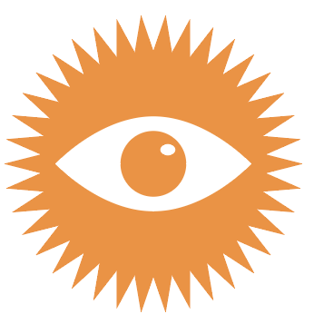
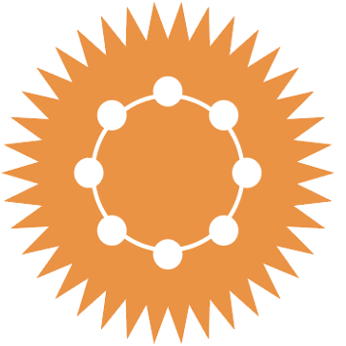

{#11} I giorni del virus /2
In questo numero:
- Un abbraccio e un pensiero
- Letture consigliate
- I cattivi, visti da vicino
- Tavola videotonda“When you invent the ship, you also invent the shipwreck; when you invent the plane you also invent the plane crash; and when you invent electricity, you invent electrocution… Every technology carries its own negativity, which is invented at the same time as technical progress.”
Paul Virilio, Politics of the Very Worst
Cari lettori,
siamo alla nostra seconda missiva scritta in tempo di quarantena, e se la fase 1 si avvicina alla fine, lo stesso concetto di fase 2 ci suggerisce che il virus sta segnando la nostra epoca in profondità. Un primo risultato di questo passaggio è che di virus si parla ovunque, nelle chat, nelle file al supermercato, quando si incrocia un passante che porta a spasso il cane (mai più di ora il migliore amico dell’uomo…), nelle file al giornalaio il 25 aprile (buona festa della Liberazione, by the way).
E ovviamente su internet: opinioni, dati, proiezioni, hanno un volume che sembra insormontabile. Questa sensazione è tanto più forte quanto più il tempo della quarantena ci fa sentire soli, perché da soli è difficile orientarsi. Dentro la catasta di informazioni, fatichiamo a trovare un senso. Siamo pieni di fotografie della situazione, da tantissimi punti di vista, ma ci manca una visione.
Ci siamo quindi chiesti quali visuali condividere della riflessione che anima la nostra comunità nomade in questi giorni. Vogliamo portare alla luce elementi del dibattito che sono passati in secondo piano, magari perché non forniscono risposte, ma pongono domande interessanti. Per questo proponiamo un elenco di letture consigliate e commentate.
Nel nostro piccolo diamo anche noi un contributo alla discussione. Sul suo sito Festivaletterattura propone una sintesi del percorso organizzato lo scorso Settembre a Mantova. Di cosa si era parlato nello spazio di Sciecenground 1.5? Beh, proprio di microbi. Ritornare su quelle chiacchierate e quegli appunti può essere utile oggi, quando il discorso sulla “guerra al virus” rende difficile ragionare sul ruolo ecosistemico di questi soggetti.
Inoltre abbiamo video-intervistato alcuni medici impegnati in prima persona a gestire COVID-19. In questa prima puntata si parla di primo impatto con COVID-19, di servizio ospedalieri e gestione territoriale.
Un abbraccio virtuale
EXTEMPORANEA
[Interpunzione grafica di Elisa Campagnaro]

Consigli di lettura
- Il dibattito sulle app: nella fase due si prospetta da più parti l’utilizzo di applicazioni per smartphone che permettano di tracciare la popolazione. Molte analisi si sono accavallate, ne proponiamo tre: una puntata della mailing list Guerre di Rete si concentra sulle linee guida europee, sui sistemi attualmente ipotizzati, sulle domande aperte; il collettivo Ippolita in un altro intervento si esprime chiaramente sull’impossibilità di un rapporto etico con questi dispositivi di controllo; l’epidemiologa Stefania Salmaso infine riporta l’attenzione sull’intervento territoriale, unico in grado di contenere i nuovi focolai di infenzione.
- Immaginare gesti-barriera contro il ritorno alla produzione pre-crisi: un testo molto interessante di Bruno Latour è stato tradotto in italiano. Il filosofo francese parte dal fatto che il virus ha messo in stand-by l’apparato produttivo, ci ha permesso di osservare l’arbitrarietà di molte condizioni che ritenevamo necessarie e invece erano solo specifiche di un modello produttivo. Oggi «non si tratta più di riprendere o influenzare un sistema di produzione, ma di abbandonare la produzione come unico principio di relazione al mondo. Non è una questione di rivoluzione, ma di dissoluzione»
- The WHO v coronavirus: why it can’t handle the pandemic: Un lungo articolo del Guardian esplora la geopolitica dentro all’Organizzazione Mondiale della Sanità
- Governo di unità razionale: dalla nostra comunità sparpagliata escono tanti contributi, uno di questi lo potete trovare su Slow News: «non è mai stato più lampante di oggi che la cosiddetta “natura” da sola non parla, ma deve essere interrogata, e che la qualità della risposta dipende dalla struttura della domanda. Anzi, tanta parte della risposta è nella domanda. Da dove parte il virus? Come si diffonde? Quali agenti possono contrastarlo? Quali possono imitarlo e scaturire in noi una risposta immunitaria? Qual è la sua infettività/morbosità/viralità? E’ debellabile?»
- Low-cost & Open-Source Covid19 Detection kits: ci stiamo interessando alla condivisione di saperi, tecniche e materiali per una prevenzione e cura dal basso in contesto epidemico. Qui trovate un progetto di sviluppo e condivisione di metodologie open source per i test di positività al Covid-19.
- Projecting the transmission dynamics of SARS-CoV-2 through the postpandemic period: un articolo uscito su Science cerca di modellizzare lo sviluppo dell’epidemia nei prossimi mesi, cosa succede dopo il picco? Com’è la normalità a cui stiamo tornando?
- Suppression of COVID-19 outbreak in the municipality of Vo, Italy: il primo studio epidemiologico italiano sulla comunità di Vo’ Euganeo permette qualche lieve ottimismo sul ritorno dei bambini al gioco…
I cattivi, visti da vicino
Guerra Guerra Guerra al virus!
Il gergo bellico in questi giorni è tornato in auge. I medici sono “in prima linea”, gli altri attendono in “retroguardia”. E se in guerra “tutto è lecito”, qualcuno ha proposto “medaglie al valor medico”. Quello che è chiaro è che non sarà una “guerra lampo”.
E se non fosse affatto una vera e propria guerra? Nelle ultime pagine di Guerra e Pace Lev Tolstoy ricostruisce la battaglia di Tarutino come una catena di incidenti e coincidenze, sostenendo che molti frangenti non siano mai avvenuti: i soldati, stanchi e disinteressati a combattere, interpretavano con disinvoltura i dispacci, e per preservarsi eseguivano manovre simboliche che non portavano a scontri. I resoconti storici vogliono però che sia stata una grande vittoria di Kutuzov su Napoleone, e che segnò la svolta della guerra.
A partire da questa battaglia, e dall’interpretazione di Tolstoy, si apre il saggio Les Microbes – Guerre et Paix suivi de Irreductions dell’antropologo e filosofo Bruno Latour, un libro che l’anno scorso ci ha accompagnato nei percorsi di Scienceground 1.5 a Festivaletteratura. Questi percorsi sono ora raccolti nella Zona Blu, dove si può riascoltare vario materiale d’archivio. Sei contributi, riuniti in quattro gruppi tematici, per tentare di raffigurarci il nostro rapporto con questi esseri: che ci fanno ammalare e fermentano la birra, che mettono in crisi nazioni e digeriscono i nostri cibi.
E con i quali forse sarà necessario scendere a patti, rimpiazzando la retorica di guerra con la diplomazia.

Tavola videotonda: Quale futuro per la sanità pubblica?
Quest’epidemia ha smascherato in maniera evidentissima la fragilità della nostra medicina preventiva e della medicina di iniziativa, quindi la prevenzione delle patologie prima che esse si possano manifestare. Questa è una riflessione da tenere dentro nel ripensare i nostri sistemi sanitari, che non possono essere centrati sull’ospedale. L’idea della sanità pubblica è quella di non farti proprio ammalare. Poi di qualcosa si deve pure morire…
Quale futuro per la sanità pubblica al tempo di COVID-19? Abbiamo posto questa domanda a due medici ospedalieri impegnati sul fronte COVID-19: Emanuele De Simone, nefrologo presso il San Giovanni in Bosco, Torino, e Giorgio Fullin, anestesista-rianimatore presso l’ospedale dell’Angelo, Mestre. Intervengono Chiara Di Girolamo (medico di salute pubblica, AUSL BOlogna), Alessandra Cerioli (rappresentante dei pazienti, comitato etico AVEC), e Matteo Polettini (ricercatore, membro ExTemporanea).